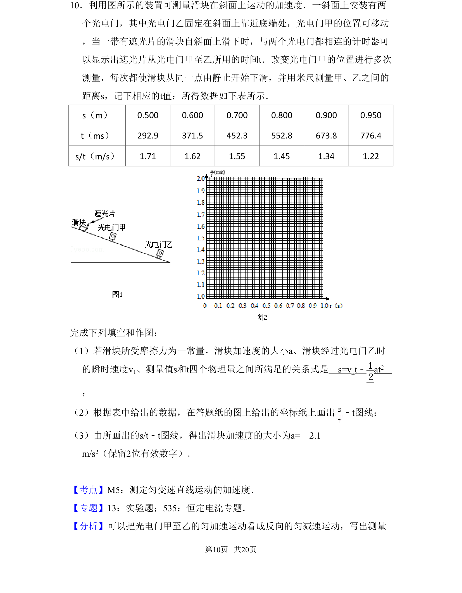
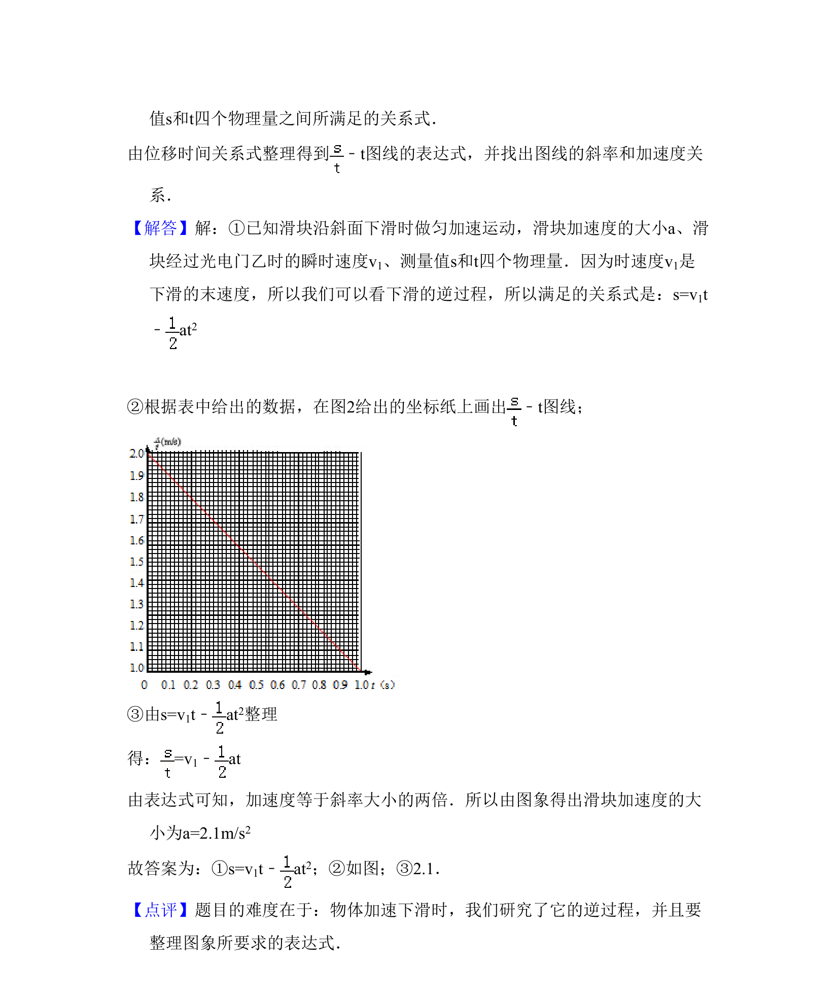

考点：测定匀变速直线运动的加速度 图像法处理数据 匀变速直线运动位移时间关系

通过光电门测量数据，利用匀变速运动公式和图像法求滑块加速度的实验题

📄 原 PDF 第 10 页：
素材/真题/吉林/2008-2024·（吉林）物理高考真题/2011年高考物理试卷（新课标）（解析卷）.pdf
10．利用图所示的装置可测量滑块在斜面上运动的加速度．一斜面上安装有两 个光电门，其中光电门乙固定在斜面上靠近底端处，光电门甲的位置可移动 ，当一带有遮光片的滑块自斜面上滑下时，与两个光电门都相连的计时器可 以显示出遮光片从光电门甲至乙所用的时间t．改变光电门甲的位置进行多次 测量，每次都使滑块从同一点由静止开始下滑，并用米尺测量甲、乙之间的 距离s，记下相应的t值；所得数据如下表所示． s（m） 0.500 0.600 0.700 0.800 0.900 0.950 t（ms） 292.9 371.5 452.3 552.8 673.8 776.4 s/t（m/s） 1.71 1.62 1.55 1.45 1.34 1.22 完成下列填空和作图： （1）若滑块所受摩擦力为一常量，滑块加速度的大小a、滑块经过光电门乙时 的瞬时速度v1、测量值s和t四个物理量之间所满足的关系式是 s=v1t﹣ at2 ； （2）根据表中给出的数据，在答题纸的图上给出的坐标纸上画出 ﹣t图线； （3）由所画出的s/t﹣t图线，得出滑块加速度的大小为a= 2.1 m/s2（保留2位有效数字）．
【考点】M5：测定匀变速直线运动的加速度．菁优网版权所有 【专题】13：实验题；535：恒定电流专题． 【分析】可以把光电门甲至乙的匀加速运动看成反向的匀减速运动，写出测量